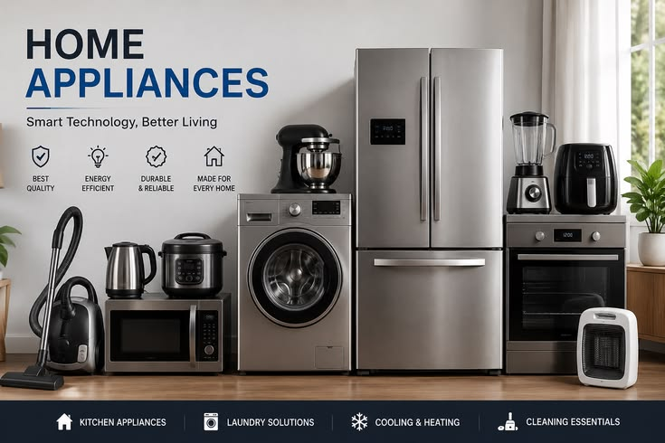
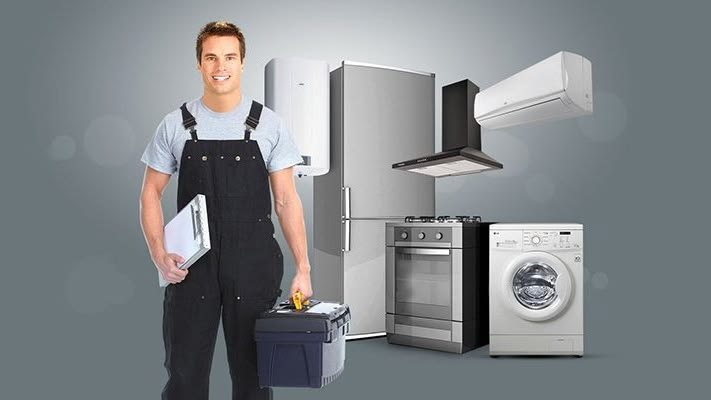
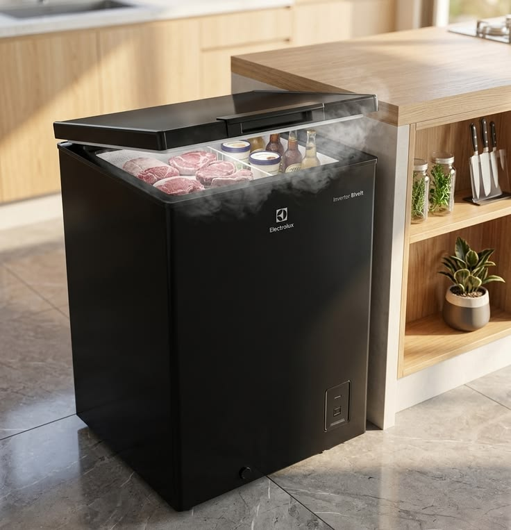
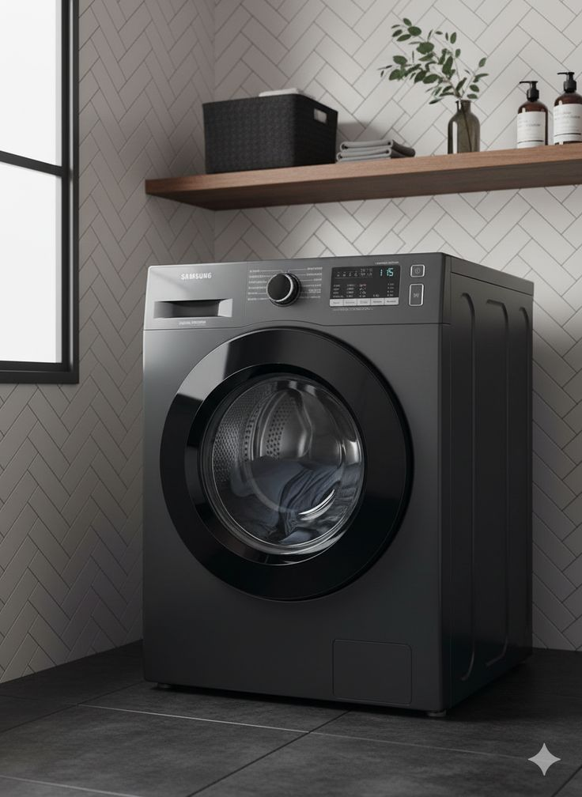
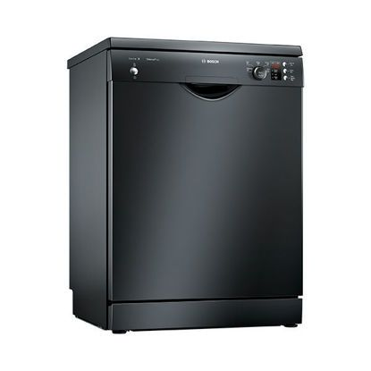
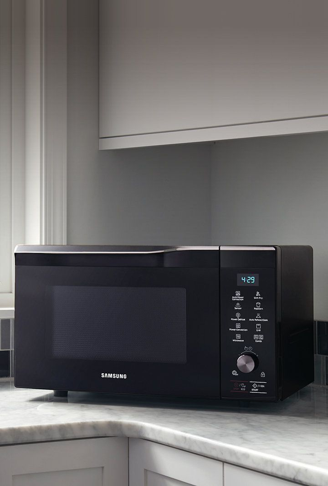
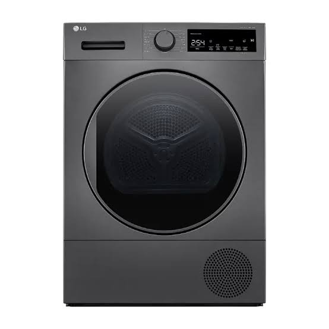

نحن نبحث عن راحة بالكم ونعمل على إصلاح أجهزة المنزل العطلية في مصر باحترافية تامة.
المركز المعتمد هي خيارك الأمثل والأول لعملية صيانة الأجهزة المنزلية في مصر. نحن لا نقتصر فقط على الإصلاح، بل نضمن لك إعادة جهازك كأنه جديد تماماً مع تقديم ضمان معتمد على الصيانة وقطع الغيار الأصلية 100%.
خبرة في الصيانة
عميل راضٍ
دعم فني وسريع

اكتب هنا البرجراف أو النص التعريفي الخاص بهذا السكشن، يمكنك تغيير هذا النص بأي محتوى تريده .
نقدم لك خدمات صيانة شاملة لجميع أجهزتك المنزلية بأعلى جودة وبأيدي فنيين متخصصين ومعتمدين

إصلاح جميع أعطال التبريد وتسريب الغاز وتغيير الفلتر والكومبروسر بقطع أصلية.
زيارة الخدمة
خدمة سريعة لحل مشاكل الثلج وعدم التبريد وصيانة الأرفف والكباسات بالمنزل.
زيارة الخدمة

علاج مشاكل التنظيف، التسريب، وعدم تسخين المياه لجميع الماركات العالمية.
زيارة الخدمة
إصلاح أعطال الإضاءة، البنل، الصوت، والصورة لجميع الشاشات الذكية (LED & Smart).
زيارة الخدمة
